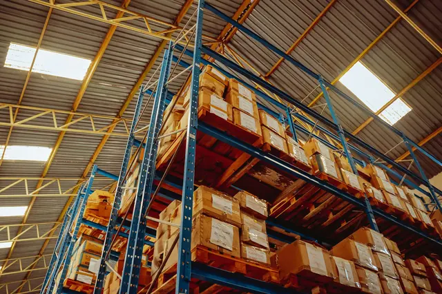

Rack selectivo para pallets
Acceso directo a cada pallet desde el pasillo. Es el punto de partida para operaciones con muchas referencias y rotación variable.
- Tipo de carga
- Mercancía paletizada, de mediana a pesada
- Acceso
- Directo a cada posición, sin mover otras cargas
- Se define en ingeniería
- Niveles, luz entre largueros, ancho de pasillo según montacargas y capacidad por nivel